Aesthetics
Aesthetics decide how regions look: fill, stroke, width, opacity. You can set them for every region at once, for a group, or for a single region, and separately for the base, hover and selected states. This page builds that up one layer at a time.
One look for every region
Pass a single aesthetic to aes=. aes.Shape is for filled shapes, aes.Line for lines and aes.Text for text.
from shinymap import aes, input_map
input_map("region", outline, mode="single", aes=aes.Shape(fill_color="#c7d2fe"))Anything you leave out keeps the library default, including the hover and selection styles.
States: base, hover, select
aes.ByState sets a look per state. select and hover are drawn on top of the base look, so they only need the properties that change.
aes.ByState(
base=aes.Shape(fill_color="#e2e8f0", stroke_color="#ffffff", stroke_width=1.5),
hover=aes.Shape(stroke_color="#0f172a", stroke_width=2.5),
select=aes.Shape(fill_color="#3b82f6", stroke_color="#1e40af"),
)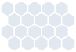
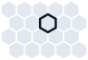
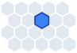
Set a state to None to switch it off, e.g. hover=None. Values can also be relative to the base look: hover=aes.Shape(stroke_width=PARENT.stroke_width + 1) (from shinymap import PARENT).
Groups and regions: aes.ByGroup
aes.ByGroup assigns looks by key. A key can be a region ID or a group name. Groups are defined in the outline’s metadata:
outline = Outline.from_dict({
"r0": ..., "r1": ..., ...,
"_metadata": {"groups": {"north": ["r0", ..., "r9"], "south": ["r10", ..., "r19"]}},
})
aes.ByGroup(
north=aes.Shape(fill_color="#fde68a"),
south=aes.Shape(fill_color="#a7f3d0"),
)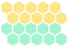
Each value can itself be an aes.ByState, so a group can have its own hover and selection look.
Which setting wins
When several entries apply to a region, the most specific one wins:
region ID › group › type (__shape, __line, __text) › everything (__all)
The same order applies to each state: base, select and hover.
A single aesthetic passed to aes= counts as __all for the element type it is written for. Each picture below adds one more specific entry:

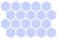
__all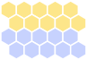
north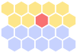
r7aes.ByGroup(
__all=aes.Shape(fill_color="#c7d2fe"),
north=aes.Shape(fill_color="#fde68a"),
r7=aes.Shape(fill_color="#f87171"),
)Coloring by value
shinymap.aes.color turns data into one color per region. Pass the result through aes.ByGroup, typically from @render_map so the colors follow your data. scale_sequential is for counts from a Count input: regions not in the dict count as zero and get the lightest color.
from shinymap import Map, aes, output_map, render_map
from shinymap.aes.color import scale_sequential
output_map("result", outline)
@render_map
def result():
colors = scale_sequential(counts, region_ids, max_count=5)
return Map(aes=aes.ByGroup(**{rid: aes.Shape(fill_color=c) for rid, c in colors.items()}))For data such as populations or ratios, use scale_continuous. It takes floats, maps vmin to the lightest color and vmax to the darkest, and gives regions without a value a neutral gray, so “no data” does not look like the lowest value:
from shinymap.aes.color import scale_continuous
rates = {"r0": 12.5, "r1": 48.0, "r2": None} # r2 and regions not listed: no data
colors = scale_continuous(rates, region_ids, vmin=0, vmax=100)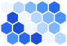
scale_sequential: counts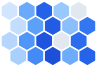
scale_continuous: data, gray where missing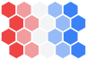
scale_diverging: below / above a midpoint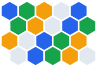
scale_qualitative: categoriesWhere to set aesthetics
input_map(..., aes=...)andoutput_map(..., aes=...)set the look when the page is built.Map(aes=...)returned from@render_mapis layered on top ofoutput_map()’s look each time it renders. Properties it does not set are kept.Wash(shape=..., line=..., text=...)replaces the library defaults for every map made from it (wc.input_map,wc.output_map,wc.render_map).
The library defaults are themselves a wash, shinymap.default_wash; input_map and friends are its methods. Use it where you need the default look outside an app, for example to save a static picture:
from shinymap import StillLife, default_wash
StillLife(default_wash.build(outline, value={"r7": 1})).to_svg("map.svg")